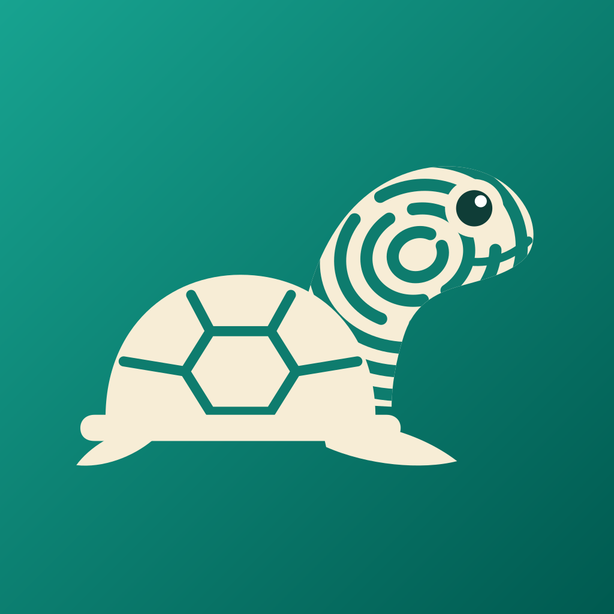
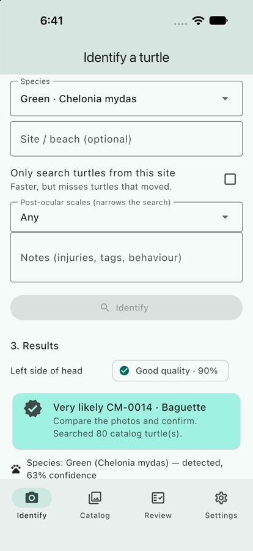
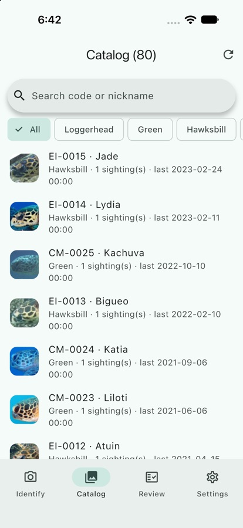
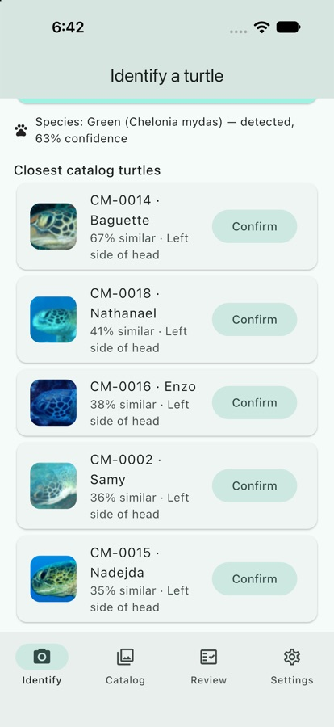

Turtles iDTurtles iD identifies individual sea turtles from a photo of the scales on their head, on a phone in the field or a laptop at the station, with no internet connection. Turtles iD identifica tortugas marinas individuales a partir de una foto de las escamas de su cabeza, en el teléfono durante el trabajo de campo o en la laptop de la estación, sin conexión a internet.


Following individual turtles for decades means tags that hurt and get lost, or hours comparing photos by eye as the catalog grows.Seguir a cada tortuga durante décadas exige marcas invasivas que se pierden, u horas comparando fotos a ojo a medida que crece el catálogo.
The scales on a turtle's head form a unique pattern that never changes. A photo is enough, and it doesn't touch the animal.Las escamas de la cabeza forman un patrón único que no cambia en toda la vida. Basta una foto, sin tocar al animal.
The app suggests the closest turtles in seconds, offline, and a researcher confirms. It never decides alone.La app sugiere las tortugas más parecidas en segundos, sin conexión, y un investigador confirma. Nunca decide sola.
| On 90 newer photos (round 7 model)Con 90 fotos más recientes (modelo ronda 7) | LoggerheadCaguama | GreenVerde | HawksbillCarey |
|---|---|---|---|
| Right turtle firstTortuga correcta en primer lugar | 70 % | 60 % | 80 % |
| Right turtle in the top 5Tortuga correcta entre las 5 primeras | 80 % | 92 % | 93 % |
| Wrong "very likely""Muy probable" equivocado | 0 | 0 | 0 |
Every test photo was taken later than the catalog photos. The green and hawksbill turtles come from Réunion, a site the model never trained on, as Galápagos will be.Cada foto de prueba se tomó después que las del catálogo. Las tortugas verdes y carey son de Reunión, un sitio con el que el modelo nunca entrenó, como ocurrirá en Galápagos.

One codebase for iPhone, Android, Mac, Windows and Linux. 210 automated tests. Source code available to evaluators on request.Un solo código para iPhone, Android, Mac, Windows y Linux. 210 pruebas automatizadas. Código fuente disponible para evaluadores bajo solicitud.
The browser demo is the real iOS app with 80 turtles already in the catalog. Tap From gallery, pick a sample photo, choose its species and tap Identify. Sessions last up to 3 minutes.La demo en el navegador es la app real de iOS con 80 tortugas en el catálogo. Toca From gallery, elige una foto de muestra, selecciona su especie y toca Identify. Las sesiones duran hasta 3 minutos.
▶ Open the demo▶ Abrir la demo